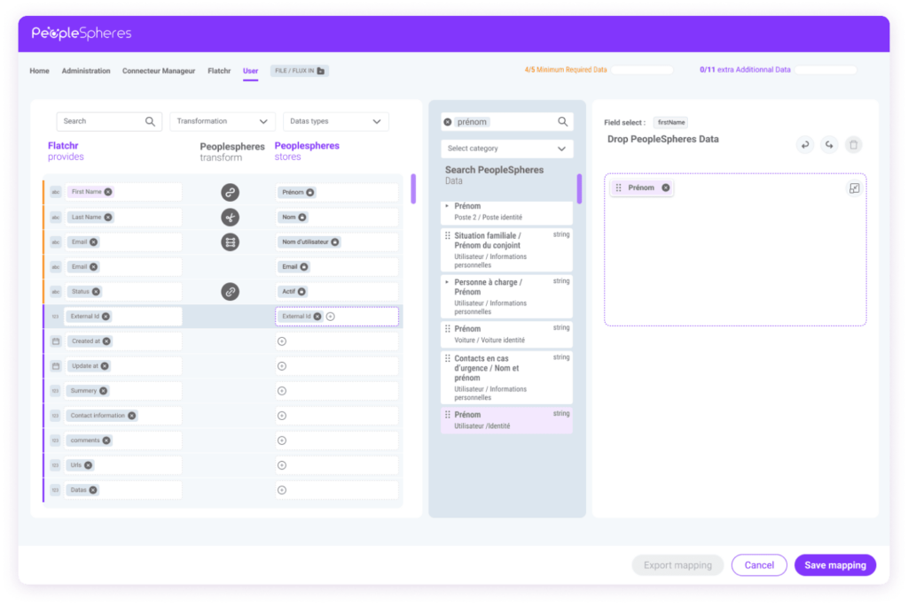

Connector Mapper
Outil permettant aux clients de configurer et personnaliser les flux de données entre leurs solutions RH. J'ai contribué au développement front-end en React en intégrant des maquettes Figma en composants réutilisables, en participant au design system et en développant des interfaces dynamiques (mapping de champs, suivi des flux, statuts en temps réel) via la consommation d'API REST.
Stack technologique
